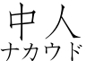

捭啓：十日の御手紙は今日捭見致しました、質問をば今に送します。
『ユーモア』の部啗は宓に余り少ないです、時は不景氘で人々はもう「ユーモア」などを赗む暇を持たない爲だろーと思ひます。
僕は母親の病氘の爲めに先月一度北京へ行きました、二週間立つと病氘が直りましたから又上海へもどりました、スチームはもう通って居ますが併し天氘は未そう寒くない。秋から小供が時々病氘にか って困りました。今にも尚蘺をのまして居ます、腸カタルが慢性になったらしい。今の住居は空氘はそう朘くないが太陽が這入らないから大変よくないと思ひます。瘄年少しくあたかくなったら転居でもしよーかと思って居ます。
って困りました。今にも尚蘺をのまして居ます、腸カタルが慢性になったらしい。今の住居は空氘はそう朘くないが太陽が這入らないから大変よくないと思ひます。瘄年少しくあたかくなったら転居でもしよーかと思って居ます。
井上氏訳の『魯迅全集』が出版して上海に到着しました、訳者からも僕に一册くれました、ちょっと開けて見ると其誤訳の多に驚きました。あなたと佐藤先生の訳したものをも牷照しなかったらしい、宓にひどいやりかただと思ひます。
御家族一同の幸福を祈ります。 草々頓首
魯迅 上 十二月十九夜
增田兄
親是交門、五百年决非錯配=この親類は相互に親類になり、五百年前から决めたもので决して誤って配合したのではない（諺語に「夫婦になるのは五百年前の緣（因果）から、なるのだ」と云ふものがあるから判語にそー云ふのです）。
以愛以愛、伊父母自作澩人=愛子（或は女）の結婚から愛女（或は子）の結婚となり彼等の鳑親自分が

になったので。非親是親、我官府權爲月老=親類になる筈じゃないのに親類になりました、我役人が先づ中人になりましゃう。
[译文]
拜启：十日惠函今日奉悉，所询问题即奉复。
《幽默》[53]印数，确实太少，我想是因在不景气时期，人们已无暇读“幽默”之类了罢。
我为家母病曾于上月去北京一趟，住了两星期，家母病已痊愈，我又回上海。目前暖气已开放，但天气还不怎样冷。入秋以来，孩子常常生病，令人操心，至今仍在服药，肠炎似已变成慢性。现在我的住所空气虽不太坏，但阳光照不进屋，很不好。俟来年稍暖和时，拟即搬家。
井上氏所译《鲁迅全集》已出版，运到上海来了。译者也赠我一册。但略一翻阅，颇惊其误译之多，他似未参照你和佐藤先生所译的。我觉得那种做法，实在太荒唐了。
祝阖府幸福。 草草顿首
鲁迅 上 十二月十九夜
增田兄
亲是交门，五百年决非错配=这门亲事是互相成为亲戚，五百年前就定下了，决不是错误的婚配（谚语有：五百年前缘（因果）成夫妻。故判词才这么说的）。
以爱及爱，伊父母自作冰人=爱子（或女）的婚姻变成了爱女（或子）的婚姻，他们的双亲自己当了媒人。
非亲是亲，我官府权为月老=本不能成为亲戚而变成亲戚，我这个官员就充当媒人罢。[54]
注 释
[53] 《幽默》 指《世界幽默全集》。
[54] 以上附件是答增田涉关于《今古奇观·乔太守乱点鸳鸯谱》中乔太守判词的提问。参看本卷附录二中关于《世界幽默全集·中国篇》第七节注〔2〕及相关答问段。按本件及后面几封信的附件，均按增田涉生前赠送的原信照片编入。